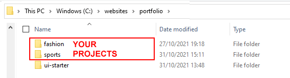

What do you want to create?
Hero block
Grab the attention of visitors to your website. Nine hero block layouts to choose from.
One column
The simplest layout. Just a single column of content, left to right across the screen.
Two-column split
Text in one column and an image or video in the other. One of the most widely-used layouts.
Two columns
Two side-by-side columns of content. A good choice for sections with lots of text.
Three columns
Three side-by-side columns of content. Probably the most widely-used of all layouts.
Four columns
A good choice for small amounts of text with small images or icons.
Contact form
A basic form with Name, Email and Message fields. Add a FormID from Formspree or similar.
Footer
A single-column footer with various navigation links and social media contact points.
All the above need the files in this compressed file:
Download and unzip ui-starter.zip into folder 📁 portfolio/ui-starter
How to use this UI-Kit builder
For each website project you want to create, make a copy of the ui-starter folder, and the rename it to the name of your project.
In the example below, two copies have been created: one for a fashion website project and one for a sports website.
The index.html file
In the ui-starter folder is a single web page named index.html.

Into this you will paste the HTML content you copy from the UI-Kit app.

The index.html file is a 'ready-to-go' web page. In the <body> are the standard semantic tags such as <header> and <main>.
And in the <head>, for your convenience, are links to three icon sets: Font Awesome, Line Awesome and Google Material UI.
The three stylesheets
In the assets/css sub-folder of the ui-starter folder are three stylesheet files:

- custom.css: Adding your own styles to the end of this CSS file gives you control over the appearance of the web layout you create.
 This CSS file makes extensive use of so-called custom properties or CSS variables.
This CSS file makes extensive use of so-called custom properties or CSS variables. - lunadoge.css: This supplies the standard layouts and default values. You probably won't want to change anything in this file.
- lunadoge.min.css: A faster-loading, minified version of the above stylesheet. It has the same content, just with all the whitespace removed.
The placeholder assets
In the assets/img and assets/videos sub-folders are lots of placeholder assets to help you design your layouts.
When creating your website projects, replace these assets with your own images and videos.
Before uploading your web pages:
- Remove the placeholder assets from your assets/img and assets/videos sub-folders. You can identify these quickly by sorting your files by order of date in File Explorer (Windows) or Finder (Apple Mac).
- In your web pages, remove any links to icon sets you are not using. Also, link your web pages to the faster-loading lunadoge.min.css stylesheet.
That's it. Happy web designing!